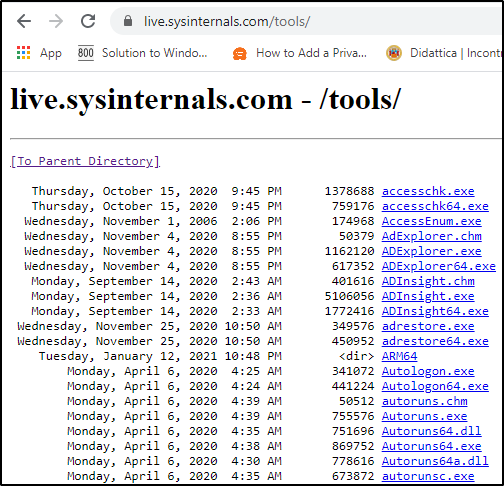

https://docs.microsoft.com/en-us/sysinternals/
It is a set of Windows applications, used to administer Windows systems (for the most part, without requiring installation)
The tools can be either downloaded from Microsoft website or
loading them an internet-accessible file share by typing \\live.sysinternals.com\tools
in a Windows Explorer window
Example of some online:
